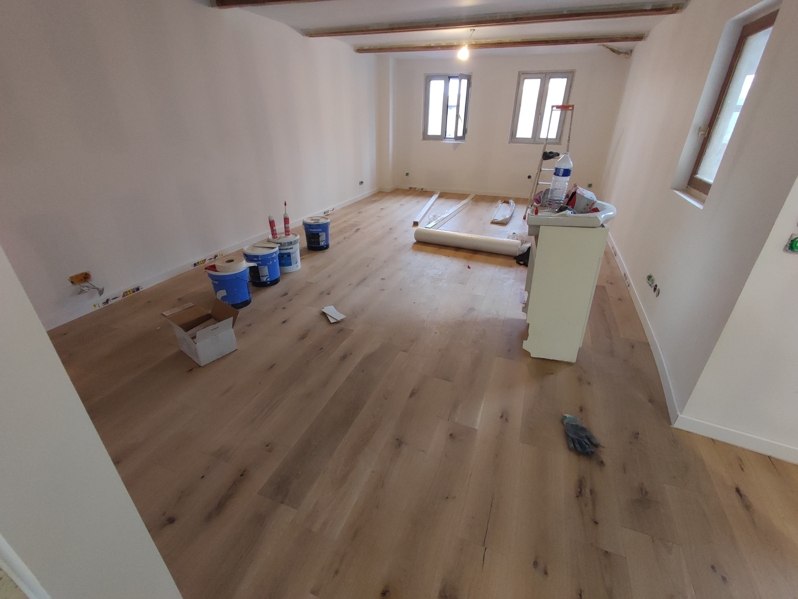
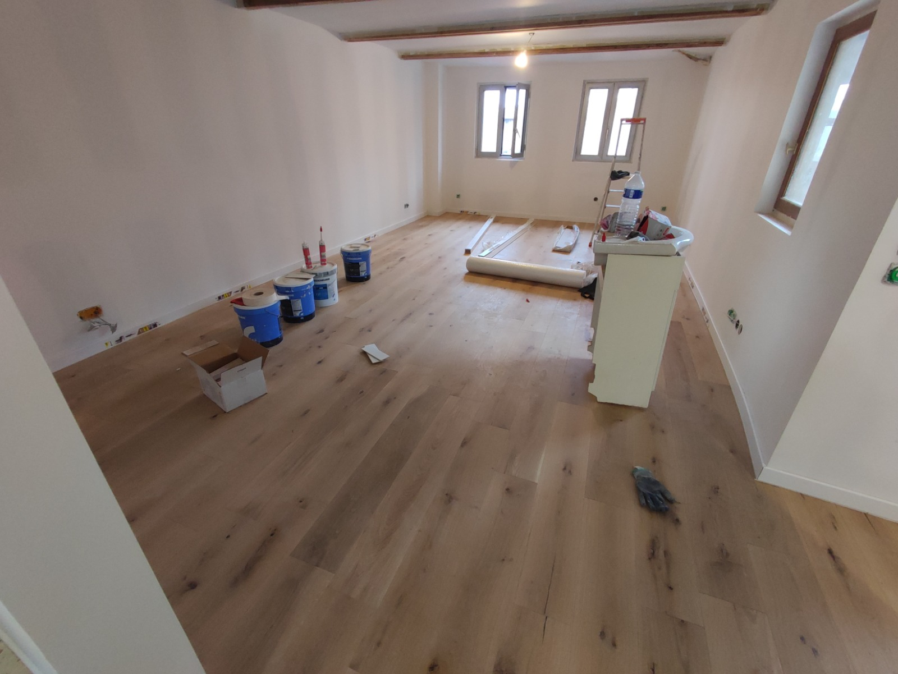

Un sol neuf et bien posé transforme immédiatement tout un logement
Le revêtement de sol donne le ton à l’ensemble de votre intérieur, tout en assurant confort acoustique et facilité d’entretien au quotidien. Qu’il s’agisse de remplacer une vieille moquette, de recouvrir un carrelage daté ou d’équiper un logement neuf, la précision de la pose fait toute la différence.
MULTISERVICES MONTPELLIER assure la préparation du support, le ragréage si nécessaire, la pose de parquets et sols souples ainsi que les finitions de plinthes et barres de seuil sur Montpellier, Nîmes et Béziers.
Vérification de la planéité de la chape ou de l’ancien carrelage et ragréage autolissant si besoin.
Pose d’une sous-couche phonique et pare-vapeur adaptée aux contraintes d’appartement.
Pose droite ou à coupe de pierre soignée autour des huisseries, tuyaux et angles.
Pose des plinthes assorties, joints périphériques et barres de seuil de transition.



Nos prestations parquets et revêtements de sols
- Pose de parquet stratifié et flottant : large choix d’essences et de largeurs de lames pour salons et chambres.
- Lames et dalles PVC clipsables (LVT) : 100 % résistantes à l’eau, idéales en cuisine, salle de bain ou fort passage.
- Pose de lino et sols vinyles en lés : solution souple, hygiénique et économique pour chambres, bureaux ou logements locatifs.
- Peinture de sol et résine époxy : protection anti-poussière et résistante aux passages répétés pour garages, caves, ateliers et locaux.
- Dépose d’anciens revêtements et rabotage de portes : chantier clé en main sans mauvaise surprise à l’ouverture des portes.
Parquet stratifié ou lames PVC : que choisir ?
Le parquet stratifié offre un aspect chaleureux et authentique très apprécié dans les pièces de vie et chambres, avec une bonne résistance aux chocs. Les lames PVC clipsables se distinguent par leur finesse (pratique en rénovation sans raboter toutes les portes), leur confort acoustique et leur étanchéité totale dans les pièces humides.
Lors de notre visite technique, nous vérifions la planéité du sol existant et la hauteur disponible sous les portes pour vous orienter vers le meilleur choix.
Logement locatif & copropriété : Nous intégrons des sous-couches acoustiques conformes aux exigences des règlements de copropriété afin de limiter les bruits d’impact.
Questions fréquentes
Pouvez-vous poser du parquet ou du PVC directement sur un ancien carrelage ?
Oui, dans la majorité des cas, après vérification de la planéité (ou ragréage léger) et pose d’une sous-couche adaptée, sans avoir à casser le carrelage.
Prenez-vous en charge la pose des plinthes et barres de seuil ?
Oui, chaque chantier de sol inclut la fourniture ou la pose de vos plinthes, quarts-de-rond et barres de seuil pour un rendu net.
Faut-il raboter le bas des portes après la pose du nouveau sol ?
Si l’épaisseur du nouveau revêtement réduit le jeu sous la porte, nous prévoyons le détalonnage propre des bas de portes.